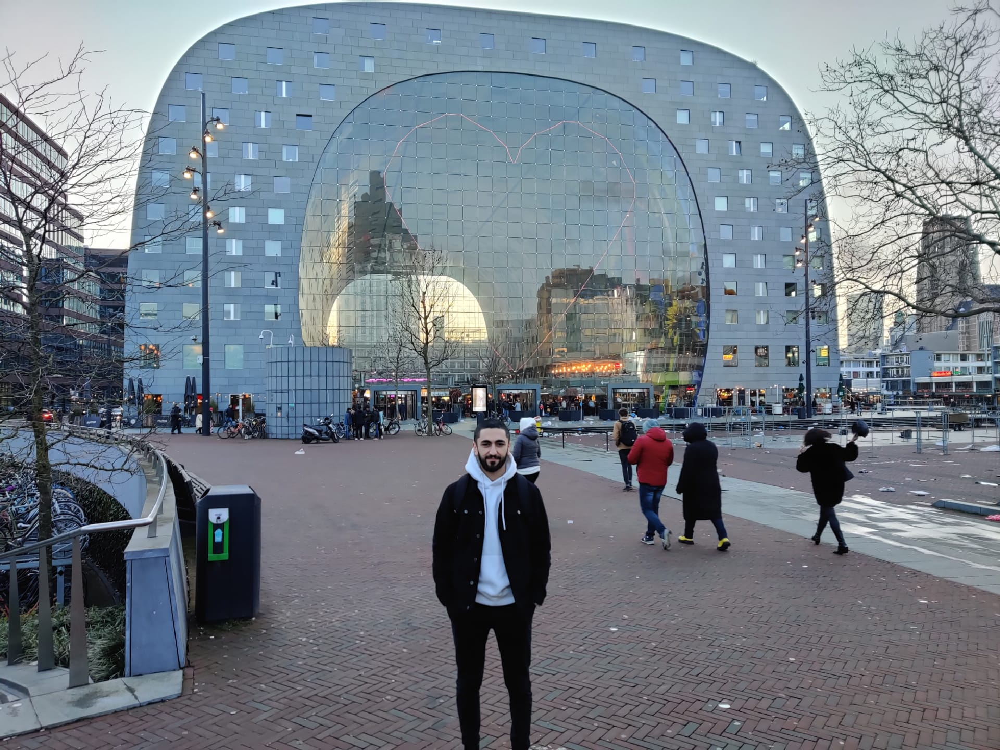

Mijn buitenlandse stage vond plaats in Rotterdam bij Cefetra BV. Cefetra is een bedrijf dat agrarische grondstoffen voor de voedsel- en brandstof industrie levert. Binnen Cefetra is er een klantgerichte applicatie genaamd webportaal. De mobiele versie van dit portaal is gebouwd om de landbouwers en leveranciers de mogelijkheid te geven om dezelfde functies via een mobiel applicatie te kunnen uitvoeren. Cefetra heeft vestigingen in Engeland en Nederland. De hoofdkantoor bevindt zich in Nederland (Rotterdam).
Ik ben alleen begonnen aan deze avontuur. Nederland is niet zo ver van België maar alsnog had ik een beetje schrik om alleen te zijn. Een dag voor mijn stage ben ik vertrokken naar Schiedam met de auto. Na een korte reis ben ik aangekomen aan de appartement waar ik van plan was om tot het einde van mijn stage te verblijven. Ik verbleef samen met enkele collega’s die ook vanuit België kwamen om in Rotterdam te werken. Op de eerste stagedag heb ik kennisgemaakt met nieuwe collega’s. Na een zeer warme verwelkoming kreeg vervolgens een inleiding over de werking van de bedrijf. Eerst werd mij uitgelegd hoe de workflow in elkaar zit binnen het bedrijf. Vervolgens hebben we enkele afspraken genoteerd met mijn bedrijfsbegeleider. Na alle uitleg zijn we begonnen met het installeren van mijn virtuele machine. Ik kreeg een virtueel machine om ermee te werken. Op deze virtuele machine heb ik de nodige software geïnstalleerd zoals Visual Code. Mijn stageopdracht was een mobiele applicatie bouwen met NativeScript Angular van de huidige webportaal genaamd Cindex. De mobiele applicatie bevat functionaliteiten zoals prijzen en transporten bekijken, bevestiging van ontvangst, beheren van contracten, … Het probleem van de huidige webportaal is dat het niet responsieve genoeg is voor mobiele toestellen. Ook is het niet evident voor landbouwers omdat zij een grote deel van de dag buiten op het veld staan en niet zomaar een laptop kunnen meedragen. Voor dit probleem heb ik een mobiele applicatie gebouwd doorheen de 14 weken. Doorheen de week hield ik me vooral bezig met de stageopdracht en bachelorproef. Enkel in de weekend kon ik de stad verkennen. De eerste twee weken was ik vooral in Rotterdam. Rotterdam is een zeer moderne stad met hoge gebouwen. Een van de mooiste plek was de bekende Markthal van Rotterdam. Het heeft een zeer interessante architectuur. Het is met grijze natuurstenen gebouw en heeft een boogvorm. De binnen gevel van de Markthal is bekleed met een groot kunstwerk van Arno Coenen en Iris Roskam, getiteld ‘Hoorn des Overvloeds’. Ik ben alleen begonnen aan deze avontuur. Nederland is niet zo ver van België maar alsnog had ik een beetje schrik om alleen te zijn. Een dag voor mijn stage ben ik vertrokken naar Schiedam met de auto. Na een korte reis ben ik aangekomen aan de appartement waar ik van plan was om tot het einde van mijn stage te verblijven. Ik verbleef samen met enkele collega’s die ook vanuit België kwamen om in Rotterdam te werken. Op de eerste stagedag heb ik kennisgemaakt met nieuwe collega’s. Na een zeer warme verwelkoming kreeg vervolgens een inleiding over de werking van de bedrijf. Eerst werd mij uitgelegd hoe de workflow in elkaar zit binnen het bedrijf. Vervolgens hebben we enkele afspraken genoteerd met mijn bedrijfsbegeleider. Na alle uitleg zijn we begonnen met het installeren van mijn virtuele machine. Ik kreeg een virtueel machine om ermee te werken. Op deze virtuele machine heb ik de nodige software geïnstalleerd zoals Visual Code. Mijn stageopdracht was een mobiele applicatie bouwen met NativeScript Angular van de huidige webportaal genaamd Cindex. De mobiele applicatie bevat functionaliteiten zoals prijzen en transporten bekijken, bevestiging van ontvangst, beheren van contracten, … Het probleem van de huidige webportaal is dat het niet responsieve genoeg is voor mobiele toestellen. Ook is het niet evident voor landbouwers omdat zij een grote deel van de dag buiten op het veld staan en niet zomaar een laptop kunnen meedragen. Voor dit probleem heb ik een mobiele applicatie gebouwd doorheen de 14 weken. Doorheen de week hield ik me vooral bezig met de stageopdracht en bachelorproef. Enkel in de weekend kon ik de stad verkennen. De eerste twee weken was ik vooral in Rotterdam. Rotterdam is een zeer moderne stad met hoge gebouwen. Een van de mooiste plek was de bekende Markthal van Rotterdam. Het heeft een zeer interessante architectuur. Het is met grijze natuurstenen gebouw en heeft een boogvorm. De binnen gevel van de Markthal is bekleed met een groot kunstwerk van Arno Coenen en Iris Roskam, getiteld ‘Hoorn des Overvloeds’.
Tijdens de uitwerking van mijn stageopdracht had ik het moeilijk om de backend van de applicatie te begrijpen. Er was een tekort aan documentatie bij Cefetra wat een vrij groot probleem is. Ik moest vaak mijn begeleider storen voor vragen zoals ‘Waar zit de upload bestand functie?’. Eerst probeerde ik het zelf te vinden, maar meestal lukte dat niet. Dit heeft ertoe geleid dat ik nog beter bewust ben geworden van de waarde van goede documentatie, waardoor ik mijn best heb gedaan om de mobiele applicatie zo goed mogelijk te documenteren. Uiteindelijk ben ik tevreden met wat ik heb opgeleverd. Er zijn zeker nog punten waarop verbetering kan komen zodat ik in de toekomst niet weer dezelfde fout ga herhalen. Wat zeker mijn zwakke punt is, dat ik gelijktijdig aan verschillende onderdelen begin te werken of eraan te focussen. Dit leidde tot onvolledige onderdelen. Als ik over de stad Rotterdam zou moeten spreken, zou ik dit stad zeker iedereen aanraden. Rotterdam heeft heel veel bezienswaardigheden. De stad zelf is best groot, maar meestal zijn de bezienswaardigheden op wandel afstand. Dankzij de internationale stage heb ik kennis kunnen maken met andere junior collega’s en zo voor een uitbreiding van mijn netwerk gezorgd. Na de 6de week ben ik teruggekeerd naar België door de Corona virus, wat ik zeer jammer vond. Uiteindelijk was het een unieke ervaring die ik dan ook met alle plezier in mijn portfolio opneem. Ik zou iedereen aanraden om buitenlandse stage te lopen. Later zou ik heel graag nog een keertje Rotterdam en Den Haag willen bezoeken en de mooie herinneringen die ik hier heb opgedaan te herleven.